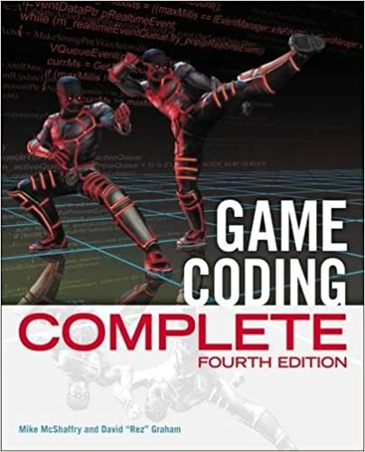
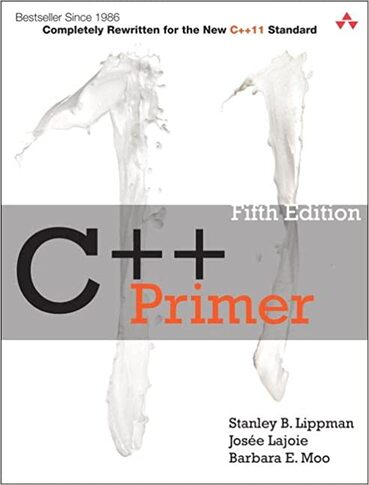

Documentation
The success of any project depends heavily on the quality of the resources used during its development. In this section, I provide a list of all the sources I consulted during the creation of this project. These sources include books, papers, and repositories that helped me gain a deeper understanding of behavior trees and their implementation.
Books
- Artificial intelligence for games
-
 "Creating robust artificial intelligence is one of the greatest challenges for game developers, yet the commercial success of a game is often dependent upon the quality of the AI. In this book, Ian Millington brings extensive professional experience to the problem of improving the quality of AI in games. He describes numerous examples from real games and explores the underlying ideas through detailed case studies. He goes further to introduce many techniques little used by developers today. The book's associated web site contains a library of C++ source code and demonstration programs, and a complete commercial source code library of AI algorithms and techniques."
"Creating robust artificial intelligence is one of the greatest challenges for game developers, yet the commercial success of a game is often dependent upon the quality of the AI. In this book, Ian Millington brings extensive professional experience to the problem of improving the quality of AI in games. He describes numerous examples from real games and explores the underlying ideas through detailed case studies. He goes further to introduce many techniques little used by developers today. The book's associated web site contains a library of C++ source code and demonstration programs, and a complete commercial source code library of AI algorithms and techniques." - Game coding complete
-
"Welcome to Game Coding Complete, Fourth Edition, the newest edition of the essential, hands-on guide to developing commercial-quality games. Written by two veteran game programmers, the book examines the entire game development process and all the unique challenges associated with creating a game. In this excellent introduction to game architecture, you’ll explore all the major subsystems of modern game engines and learn professional techniques used in actual games, as well as Teapot Wars, a game created specifically for this book. This updated fourth edition uses the latest versions of DirectX and Visual Studio, and it includes expanded chapter coverage of game actors, AI, shader programming, LUA scripting, the C# editor, and other important updates to every chapter. All the code and examples presented have been tested and used in commercial video games, and the book is full of invaluable best practices, professional tips and tricks, and cautionary advice."
- C++ Primer
-
"C++ Primer, Fifth Edition, introduces the C++ standard library from the outset, drawing on its common functions and facilities to help you write useful programs without first having to master every language detail. The book’s many examples have been revised to use the new language features and demonstrate how to make the best use of them. This book is a proven tutorial for those new to C++, an authoritative discussion of core C++ concepts and techniques, and a valuable resource for experienced programmers, especially those eager to see C++11 enhancements illuminated."
Papers
- Marcotte, R., & Hamilton, H. J. (2017). Behavior trees for modelling artificial intelligence in games: A tutorial. The Computer Games Journal, 6, 171-184.
-
"We provide a tutorial introduction to behavior trees, which are a useful way of structuring artificial intelligence in games. A behavior tree is a model of plan execution that is graphically represented as a tree. A node in a tree either encapsulates an action to be performed or acts as a control flow component that directs traversal over the tree. Behavior trees are appropriate for specifying the behavior of non-player characters and other entities because of their maintainability, scalability, reusability, and extensibility. We describe the main features of behavior trees, show an example of how to create a behavior tree, and briefly survey existing packages for editing behavior trees. We recommend that behavior trees be used when some game designers are not programmers, the conditions governing the behavior are complex, and the NPCs have aspects of behavior in common."
- Sekhavat, Y. A. (2017). Behavior trees for computer games. International Journal on Artificial Intelligence Tools, 26(02), 1730001.
-
"Although a Finite State Machine (FSM) is easy to implement the behaviors of NonePlayer Characters (NPC) in computer games, it is difficult to maintain and control the behaviors with increasing the number of states. Alternatively, Behavior Tree (BT), which is a tree of hierarchical nodes to control the flow of decision making, is widely used in computer games to address the scalability issues. This paper reviews the structure and semantics of BTs in computer games. Different techniques to automatically learn and build BTs as well as strengths and weaknesses of these techniques are discussed. This paper provides a taxonomy of BT features and shows to what extent these features are taken into account in computer games. Finally, the paper shows how BTs are used in practice in the gaming industry."
- CMSC 425: Lecture 21 Artificial Intelligence for Games: Decision Making